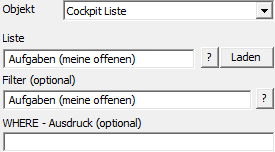
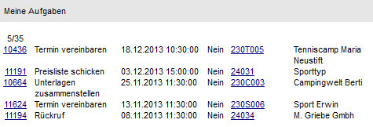

Externes Objekt - Typ "Objekt - Cockpit Liste"
Mit Hilfe des Objekts "Cockpit Liste" können all jene WinLine LIST-Listen ausgegeben werden, bei welche die Option "Cockpitansicht erstellen" (Bereich "Einstellungen") aktiviert wurde. Welche Informationen dabei genau angedruckt werden sollen, wird über den Aufbau der Liste (Spalte "Cockpit" im Bereich "Variablen") gesteuert. Als Key dient die Listennummer, welche über die folgenden Felder bzw. Bereiche zugeordnet werden kann:
ü Feld "Liste"
ü Bereich "View / Var" (Feld "Liste" muss leer bleiben)
ü Feld "Text" (Feld "Liste" und Bereich "View / Var" muss leer bleiben)

Ø Liste
An dieser Stelle wird die WinLine LIST-Liste hinterlegt,
welche ausgegeben werden soll. Mit Hilfe des Icons  kann eine Liste aller WinLine
LIST-Listen geöffnet werden, um nach einer Liste zu suchen. Zusätzlich besteht
die Möglichkeit das Formular der ausgewählten Liste mit Hilfe des Buttons
kann eine Liste aller WinLine
LIST-Listen geöffnet werden, um nach einer Liste zu suchen. Zusätzlich besteht
die Möglichkeit das Formular der ausgewählten Liste mit Hilfe des Buttons  direkt zu öffnen.
direkt zu öffnen.
Ø Filter (optional)
An dieser Stelle besteht die Möglichkeit einen zur Liste
passenden Filter zu hinterlegen, welcher bei der Ausgabe des Externen Objekts
genutzt werden soll. Mit Hilfe des Icons kann eine Liste aller WinLine
LIST-Filter geöffnet werden.
Hinweis
Wenn der hier definierte Filter genutzt werden soll, dann darf im Feld "WHERE - Ausdruck (optional)" keine Eingabe erfolgen.
Ø WHERE - Ausdruck (optional)
Wenn die Liste nach anderen Kriterien gefiltert oder der Refresh der Liste gesteuert werden soll, so kann dies im WHERE - Ausdruck hinterlegt werden. Dabei ist allerdings auf die Syntax zu achten.
Beispiele - WHERE-Statement bei einer Statistikauswertung
ü WHERE (T039.C000 =
'<VAR:55/2>') ORDER BY T039.C006 DESC
In diesem Beispiel erfolgt die
Einschränkung der Statistiktabelle auf die Spalte C000 (= Kontonummer) die
gleich der aktuell ausgewählten Kontonummer sein soll, dazu wird das Ergebnis
nach dem Rechnungsdatum absteigend sortiert. D.h. in dem Fall werden die letzten
Verkäufe des "Kontos" aus der Verkaufsstatistik angezeigt.
ü WHERE ((T039.C000 =
'<VAR:55/2>') and (T039.C002 < 90)) ORDER BY T039.C006 DESC
In
diesem Beispiel erfolgt die Einschränkung der Statistiktabelle auf die Spalte
C000 (= Kontonummer) die gleich der aktuell ausgewählten Kontonummer sein soll,
dazu werden nur die Artikelgruppen (C002) kleiner 90 berücksichtigt.
Das
Ergebnis wird nach dem Rechnungsdatum absteigend sortiert. D.h. in dem Fall
werden die letzten Verkäufe des "Kontos" aus der Verkaufsstatistik
angezeigt.
Beispiel - WHERE-Statement bei einer CRM-Liste während der Erfassung eines CRM-Falls
ü WHERE T170.C014 =
'<VAR:170/14>' and T170.C030 = -10005 and T170.C004 = 1 order by T170.C005
DESC
In diesem Beispiel erfolgt die Einschränkung der CRM-Fälle auf die C014
(= Artikelnummer), welche gleich der Artikelnummer sein soll, welche aktuelle im
zu erfassenden Fall hinterlegt wird.
Zusätzlich werden nur die aktuellen
Fälle (C004 = 1) der Workflowgruppe "-10005" (C030) angezeigt. Das Ergebnis wird
dann absteigend nach dem Erfassungsdatum (C005) ausgegeben.
Beispiel - WHERE-Statement bei einer CRM-Liste mit gesteuertem Refresh
ü WHERE T170.C009 =
'<REFRESHVAR:50/2>' and T170.C030 = -10001 and T170.C004 = 1 order by
T170.C005 DESC
In diesem Beispiel erfolgt die Einschränkung der CRM-Fälle auf
die C009 (= Kontonummer), welche gleich der aktuellen Kontonummer sein soll.
Sobald sich die Variable der aktuellen Kontonummer ändert (VAR:50/2), dann soll
die gesamte Liste neu aufgebaut werden (REFRESH).
Zusätzlich werden nur die
aktuellen Fälle (C004 = 1) der Workflowgruppe "-10001" (C030) angezeigt. Das
Ergebnis wird dann absteigend nach dem Erfassungsdatum (C005) ausgegeben.
Beispiel - Externes Objekt mit dem Typ "Objekt" - Objekt "Cockpit Liste"
